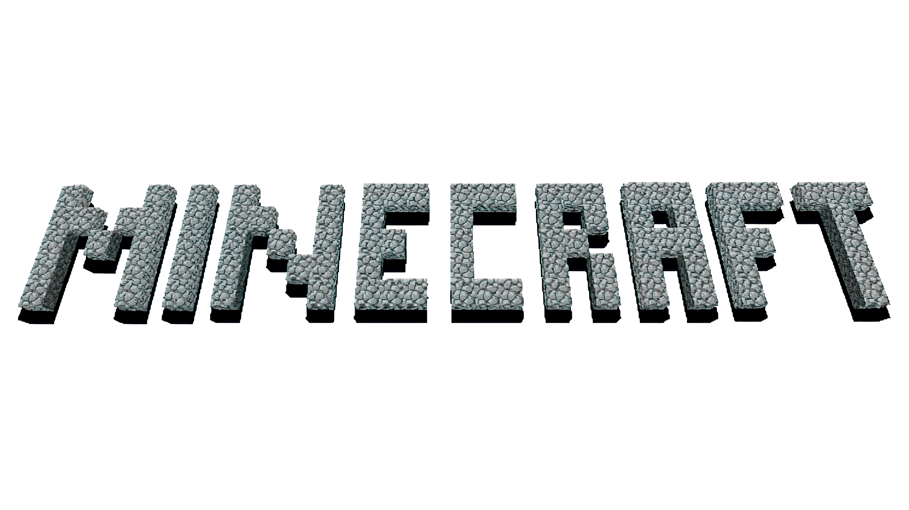

On this page you can read about the evolution and history of Minecraft.
The first version of Minecraft was called Cave Game. It was a simple 3D scene which you could walk around in, place blocks and destroy blocks. You could also spawn steves ( zombie models from Zombie town) which were randomly running around while swinging their arms in the air. The game only had 2 blocks back then: Grass and cobblestone.
The next version of Minecraft was called Minecraft Classic. The game was improved. There were more blocks, Terrain and water. The ability to spawn steves was still in the game. You can still play Classic Today.

After Minecraft Classic was INDEV. INDEV Introduced more realistic lighting to the game.
This version of the game also Introduced MD3 mob models demonstrated by: Rana, Beast Boy, Steve and Black Steve.
INDEV also added some survival features such as: dreaming, giants(they are still in the game), torches, fire and a new title screen.